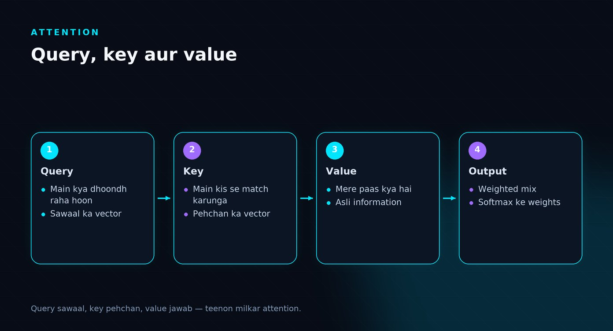
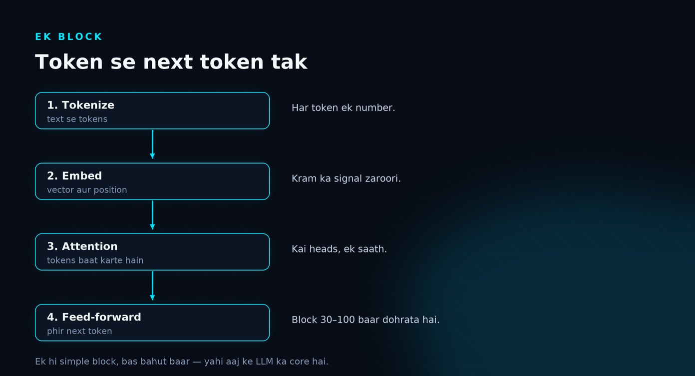

Transformer Architecture: Attention Kaise Kaam Karta Hai
“Bank” ka matlab kya hai? Agar sentence ho “paise bank me jama karo” to woh financial institution hai; agar ho “river bank par baitho” to woh kinara hai. Insaan yeh turant samajh leta hai kyunki woh aas-paas ke shabdon ko dekhta hai. 2017 tak machine translation aur language model isi kaam me bahut ladkhadate the — kyunki purane model shabd ko ek-ek karke padhte the, aur door ka context bhool jate the. Transformer ne yahi badla: usne model ko poora sentence ek saath dekhne aur yeh tay karne diya ki kaun sa shabd kis par dhyan de.
Is guide me main attention ko bilkul seedhe example se kholunga, query-key-value ka matlab bina math ke samjhaunga, multi-head attention kyun chahiye, positional encoding ka role, aur ek poora transformer block andar se kya karta hai. Aakhir me batunga ki is architecture ke do bade nuksan kya hain — kyunki har interview me yahi poocha jata hai.
Chhota jawab: Transformer ek neural network architecture hai jo poore sequence ko ek saath process karti hai. Iska core self-attention hai: har token ke liye model query, key aur value banata hai, query ko sab keys se match karke weights nikalti hai, aur un weights se values ka mix banata hai. Isse har shabd apne aas-paas aur door ke relevant shabdon se context leta hai — parallel me, ek saath.
Transformer se pehle kya tha
2017 se pehle sequence ke liye RNN aur LSTM chalte the. Woh shabd ko ek-ek karke padhte the aur apne andar ek “memory” le chalte the. Isme do dikkat thi. Pehli — raftaar: sequence lamba ho to step-by-step chalna slow hota hai, GPU ka parallel power waste jata hai. Doosri — lambi nirbharta: 50 shabd pehle ka context dheere-dheere dhundhla ho jata tha.
2017 ke paper “Attention Is All You Need” ne seedha attention par poora model khada kar diya, recurrence hata di. Fayda turant dikha — training parallel ho gayi, isliye bada data aur bada model possible hua. Aaj ke GPT, Claude, Gemini, sab isi family ke hain. Naam “transformer” isliye pada ki model input ko ek representation se doosri me transform karta hai.
Ek baat note karein: transformer sirf text ke liye nahi hai. Image ko patches me kaat kar, audio ko frames me todkar, yahan tak ki protein sequence par bhi yahi architecture chalti hai. Isliye ise samajhna aaj ek general skill hai.
Attention ka matlab — ek seedha example
Sentence lein: “Ravi ne apni cycle isliye bech di kyunki usme brake kharab tha.” Ab “usme” ka matlab kya hai? Insaan ka dimaag turant “cycle” par jata hai, “Ravi” par nahi. Attention model ko yahi karna sikhata hai — har token ke liye baaki tokens me se relevant wale chunna aur unse information lena.
Iska matlab yeh nahi ki model “samajhta” hai. Woh numbers ke through correlation seekhta hai: training me aise lakhon examples dekhe ki “usme” ke baad jo kaam ka shabd aata hai, woh aksar pehle aaye noun se juda hota hai. Attention woh raasta hai jisse yeh jodi banti hai.

Query, key, value — bina math ke
Library ka example lein. Aap counter par jaate hain aur kehte hain “mujhe 1984 ki novel chahiye” — yeh aapka query hai. Counter ke peeche har book par ek label chipka hai — title, author, year. Woh labels keys hain. Aap apni query ko labels se match karte hain, aur jo book sabse achhi match karti hai, uski poori information aap le aate hain — woh value hai.
Transformer me har token teen alag vectors banata hai: query (main kya dhoondh raha hoon), key (main kya hoon, kis cheez se match karunga), aur value (mere paas kya information hai). Phir har query ka har key ke saath dot product liya jata hai — zyada match, zyada score. Scores ko softmax se 0–1 ke weights me badla jata hai, aur un weights se values ka weighted average banta hai.
Isi ko formula me likhte hain:
Attention(Q, K, V) = softmax(Q · Kᵀ / √d) · VYahan √d se divide karna sirf isliye hai ki values bahut bade na ho jayein aur softmax ek hi jagah par 1 na de de. Bas itna hi hai — koi jaadu nahi. Poora attention ek weighted average hai jisme weights query aur key ki similarity se aate hain.
Masking: future dekhna mana hai
Text generate karte waqt model ko aage ka shabd nahi dikhna chahiye, warna woh bas copy kar lega. Isliye decoder me causal mask lagta hai — har position sirf apne se pehle wale tokens ko dekh sakti hai. Yehi wajah hai ki GPT jaisa model ek-ek token aage badhta hai, poora paragraph ek saath nahi likhta.
Multi-head attention kyun
Ek attention “head” ek hi tarah ka rishta pakadta hai. Par bhasha me kai rishte ek saath hote hain — grammar (subject-verb), meaning (pronoun ka referent), aur position (paas ka shabd). Isliye transformer 8, 16 ya 32 heads chalata hai, har head ke apne query-key-value projections hote hain, aur aakhir me sab heads ke outputs jod diye jate hain.
Sochne ka tarika: ek head “kis shabd ka kis se rishta hai” dekhta hai, doosra “kaun sa adjective kis noun par lag raha hai”, teesra “sentence ka tone kya hai”. Sab heads ek saath parallel chalte hain, isliye kharch bahut nahi badhta. Research me dikha hai ki kai heads redundant hote hain — isliye model compression me unhe prune kiya jata hai.
Positional encoding: shabd ka kram kaise pata chale
Attention ko kram ka koi natural ehsaas nahi hota — woh sab tokens ko ek set ki tarah dekhta hai. “Ram ne Shyam ko maara” aur “Shyam ne Ram ko maara” me shabd same hain, par matlab ulta hai. Isliye har token ke saath ek position signal joda jata hai.
Do tareeke aam hain. Purana — sine-cosine waves se bane fixed patterns jo har position par alag hote hain. Naya — RoPE (rotary position embedding), jisme query aur key ko position ke hisaab se ghuma diya jata hai; aaj ke zyadatar open model isi ka istemal karte hain kyunki yeh lambe context me behtar generalise karta hai. Position ka signal chhota sa lagta hai, par iske bina model shabd ka order hi kho deta hai.

Ek transformer block ke andar
Ek block me do hisse hote hain. Pehla — multi-head self-attention, jo tokens ke beech information exchange karta hai. Doosra — feed-forward network, jo har token par alag-alag (position-wise) ek chhota 2-layer MLP chalata hai; yahin model ki zyada parameters rehti hain aur yahin “knowledge” store hone ki baat hoti hai.
Dono hisson ke around residual connection aur layer normalization hoti hai. Residual connection ka matlab — input ko output me jod dena, taaki gehri training me gradient ghoomkar wapas aa sake. Normalization se values ka scale theek rehta hai. Ye do chhoti cheezein na ho to 50-layer model train hi nahi hota.
- Tokenize. Text ko tokens me todo — “learning” shayad “learn” + “ing” bane.
- Embed. Har token ko vector banao, aur position signal jodo.
- Attention. Tokens aapas me information exchange karte hain, kai heads me.
- Feed-forward. Har token apne vector par MLP chalata hai.
- Repeat. Yeh block 30–100 baar dohraya jata hai.
- Output. Aakhri vector se next token ki probability nikalti hai।
Training aur inference me farq
Training me poora sequence ek saath diya jata hai aur model har position par “agla token kya hoga” predict karta hai — ek hi forward pass me hazaaron predictions. Isliye training bahut efficient hai. Inference (jab aap chat karte hain) me model ko ek-ek token generate karna padta hai, aur har naye token par poora context dobara process hota hai — isliye chat me har shabd par thoda samay lagta hai.
Isi wajah se KV cache ka concept aaya: pehle se compute kiye gaye keys aur values memory me rakh lo, taaki har baar dobara na banao. Isse generation tez hoti hai, par lamba context zyada memory khaata hai. Aapke API bill aur latency ka bada hissa isi cache ke size se juda hai — isliye context window ka hosh se istemal karna zaroori hai.
Ek practical observation: bahut se log sochte hain ki model “poora jawab soch kar” likhta hai. Nahi — woh har step par sirf agla token chunta hai. Isliye ek galat shuruaat aage ke poore paragraph ko galat disha me le ja sakti hai, aur isi se hallucination jaisi cheezein nikalti hain.
Do bade nuksan
1. Quadratic cost. Attention har token ko har token se compare karta hai, isliye sequence double karne par kaam chaar guna hota hai. 100,000 token ka context isliye mehnga hai. Iske jawab me sliding window, sparse attention, linear attention aur state-space model (Mamba jaise) aaye hain — par aaj bhi zyadatar production model vanilla attention hi istemal karte hain, kyunki quality sabse achhi wahin milti hai.
2. Bina position ke order nahi. Upar dekha — positional encoding ke bina model ko kram ka pata nahi. Iske alawa attention ko “kaun pehle aaya” ka natural ehsaas nahi hota, isliye lambe document me door ki cheezein jodne me galti hoti hai. Yeh limitation aaj bhi research ka garam topic hai.
Mera anubhav
Jab maine pehli baar attention ka code likha, mujhe laga kuch galat hai — itna simple? Teen matrix multiply, ek softmax, aur bas. Maine ek chhota sentence le kar attention weights print kiye aur dekha ki “it” ka sabse zyada weight “dog” par ja raha hai. Us din samajh aaya ki architecture ka jaadu complexity me nahi, scale me hai: yahi simple block 96 baar, 100,000 GPU ghante, aur arabon tokens par chalta hai.
Doosri sikh practical thi. Hum ek internal search tool bana rahe the aur model ko 30 page ka manual de rahe the. Jawab galat aa rahe the. Maine socha context window badha dein, par asli dikkat alag thi — document me numbering aur tables the, aur tokenizer unhe bahut chhote tukdon me tod raha tha, jisse structure hi kho gaya. Jab humne document ko saaf headings me badla, wahi model kaafi behtar jawab dene laga. Aaj bhi jab koi kahe “model kamzor hai”, main pehle input ka format dekhta hoon.
Nateeja
Transformer ka core self-attention hai — har token query, key aur value banata hai, query ko keys se match karta hai, aur values ka weighted mix leta hai. Multi-head attention kai tarah ke rishte ek saath pakadta hai, positional encoding kram batata hai, aur attention + feed-forward ka block kai baar dohraya jata hai. Iska fayda parallel training hai; nuksan quadratic cost aur position ki kamzori.
Ise samajhne ka sabse achha tarika hai code. Kisi bhi chhote transformer implementation me attention ke 10 line likhkar ek sentence par chalao aur weights dekho — theory se zyada woh 10 line sikhayengi. Aur jab aap LLM ka bill ya latency dekhein, to yaad rakhein ki har token par yahi attention dobara chal raha hai.
Aage padhein: LLM tokens aur context window — attention ka kharch yahin samajh aata hai; embeddings aur vector search — jo transformer ke andar bane vectors par chalti hai; aur RAG vs fine-tuning — kab naya gyaan dena hai aur kab model badalna.
अक्सर पूछे जाने वाले सवाल
Transformer aur LLM ek hi cheez hai?
Nahi. Transformer architecture hai; LLM us architecture par train kiya gaya bada language model hai. Har transformer LLM nahi hota — vision aur audio model bhi transformer hote hain.
Attention ko simple shabdon me kaise samjhayein?
Har shabd poochta hai “mere baaki shabdon me se kis par dhyan dena chahiye”, aur jawab ke hisaab se unse information leta hai.
Multi-head attention me 8 head kyun, 1 kyun nahi?
Ek head ek tarah ka rishta pakadta hai. Kai heads alag-alag rishte (grammar, meaning, position) ek saath dekh sakte hain.
Transformer ko position kaise pata chalta hai?
Positional encoding se — purane model sine-cosine patterns use karte the, aaj ke zyadatar model RoPE istemal karte hain.
Kya transformer bahut mehnga hai?
Attention ka kharch sequence length ke saath quadratic badhta hai. Isliye lamba context mehnga hota hai aur KV cache memory khaata hai.